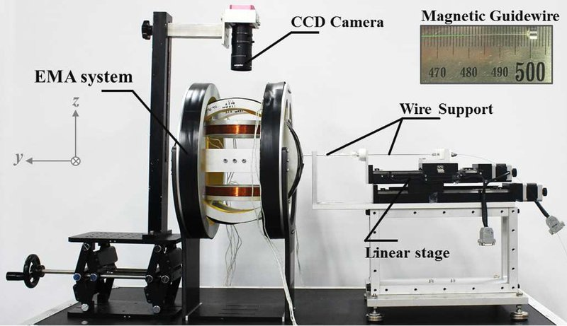

Magnetic navigation · chonnam_jeong2017
PCI magnetic wire
Magnetically steerable PCI guidewire with a Helmholtz-coil EMA and a motorized feeding stage

1 / 5


- Family
- Magnetic navigation (magnetic-navigation)
- Devices
- 2017: Asahi Conquest Pro 12 guidewire (tip OD 0.23 mm) with a bullet-shaped NdFeB magnet 1 mm x 7 mm (jeong2017_feasibility Sec. 2.1); 2019: 0.2 mm nitinol wire with a magnet tip (kim2019_novel Sec. 4.1); 2021: 0.152 mm super-elastic nitinol guidewire (Confluent Medical) carrying the 3D-printed helical head; 130 mm of wire through a Tygon sheath (0.79 mm ID) as guiding catheter (nguyen2021_guidewired Secs. II-A, IV-A)
- Degrees of freedom
- 2: insertion (feeder) + planar tip steering (field); 2021: insertion (feeder) + 3-D steering and spin of the head (field)
- Push
- Linear stage
- Twist
- Field direction
- Tested up to
- Animal
- Sim-to-real
- None found — No simulation-trained controller found for this robot.
Testing
- Highest level
- Animal
- What was tested
- 2017: five-branch phantom (about 4 mm branches), insertion success 100% with feed-forward + PID vs about 75% with feed-forward only (jeong2017_feasibility Sec. 3.3); 2019: smooth and sharply curved vessel phantoms, 3 paths x 3 replicates (kim2019_novel Sec. 4, Table 1); 2021: 5 rats in vivo (abdominal aorta, injected 9 % gelatin thrombus, contrast angiography): thrombus drilled without perforation in 3, blood flow restored in 2, rats 1 and 2 died during thrombus formation and rat 3 of bleeding after drilling; vessel phantom path tracking RMSE about 0.2 mm, maximum below 0.7 mm at 0.3 mm/s; gelatin thrombi in tubes drilled through, 54 mm (9 %) in about 48 s and 40 mm (11 %) in 43 s (nguyen2021_guidewired Secs. IV-D to IV-G, Table II, Figs. 6-8)
- Key numbers
- steering-angle error below 0.5 deg with PID vs about 7 deg feed-forward only (jeong2017_feasibility Sec. 3.2); tip-position RMSE 0.44 +/- 0.19 mm on path I, below 0.7 +/- 0.4 mm on all paths; feeding speed 1 mm/s; camera 0.1 mm per pixel (kim2019_novel Sec. 3-4); 2021: three Helmholtz pairs on three 15 kW supplies, 30 mT, rotating field up to 370 Hz; drilling force up to 0.8 N and torque 0.1125 mN m at 100 Hz; feedback steering error below 0.5 deg (maximum 0.52 deg) against about 3 deg feed-forward (nguyen2021_guidewired Secs. III, IV-A, IV-D)
Mechanism
- Push (translation)
- linear-stage+clamp (motorized feeding stage with a guidewire holder, jeong2017_feasibility abstract; linear stage, kim2019_novel Fig. 1); tip steered magnetically
- Twist (rotation)
- field direction of the Helmholtz coils (no shaft rotation); 2021: a rotating field spins the helical head on its spherical joint; the guidewire does not turn (nguyen2021_guidewired Secs. II-A, III)
- Device range
- N.R.
- Target anatomy
- coronary (PCI), tested in planar vessel phantoms; 2021: chronic total occlusion; rat abdominal aorta used as a coronary-size model (nguyen2021_guidewired Sec. IV-G)
Sensing and interface
- Force sensing
- none
- Leader and haptics
- no
- Imaging
- overhead CCD camera only (jeong2017_feasibility Sec. 3.1; kim2019_novel); 2021: optical camera on the phantom, C-arm X-ray (Ziehm Vision RFD) in the rat study (nguyen2021_guidewired Sec. IV-A)
- Sterility
- N.R.
Size
- Footprint (mm)
- Helmholtz coil radius 162 mm, region of interest 100 x 100 (kim2019_novel Sec. 2.1)
- Mass (kg)
- N.R.
Simulation
- Simulation model
- none found
- Sim-trained controller
- none found
Versions
- Lineage
- 2017: two pairs of Helmholtz coils + motorized feeding stage, feed-forward + PID steering (jeong2017_feasibility); 2019: EMA of two Helmholtz pairs and one Maxwell pair (one x-axis pair used) + linear-stage feeder, path regeneration, feeding control and vision tracking (kim2019_novel); 2018-21: same group's guide-wired helical microrobot (GHM) for mechanical atherectomy: 3D-printed corkscrew head (1.6 x 9.5 mm, NdFeB magnet magnetised across the axis) on a spherical joint at the tip of a 0.152 mm nitinol guidewire, steered by a uniform field and spun for drilling by a rotating field (18-370 Hz, resonant circuits) of three Helmholtz-coil pairs (30 mT), advanced and retracted by a motorised linear-stage feeder in an automatic tracing mode; in vitro feasibility (Nguyen 2018 EMBC); phantom path tracking, gelatin-thrombus drilling and 5 rats in vivo (Nguyen 2021 IEEE TBME 68:2490-2498, Secs. II-IV, Figs. 2, 4) (Konda 2025 Table 2 row 8) (nguyen2021_guidewired; konda2025_robotically)
Sources
- Feasibility study on magnetically steerable guidewire device for percutaneous coronary intervention · International Journal of Control, Automation and Systems, 2016 · doi:10.1007/s12555-015-0269-7 [jeong2017_feasibility]
- A Novel Tip-positioning Control of a Magnetically Steerable Guidewire in Sharply Curved Blood Vessel for Percutaneous Coronary Intervention · International Journal of Control, Automation and Systems, 2019 · doi:10.1007/s12555-018-0116-8 [kim2019_novel]
- Robotically steerable guidewires—Current trends and future directions · Science Robotics, 2025 · doi:10.1126/scirobotics.adt7461 [konda2025_robotically]
- Guide-Wired Helical Microrobot for Percutaneous Revascularization in Chronic Total Occlusion <i>in-Vivo</i> Validation · IEEE Transactions on Biomedical Engineering, 2021 · doi:10.1109/tbme.2020.3046513 [nguyen2021_guidewired]
Notes
- Notes
- Family: magnetic. konda2025 Table 2 rows 5 and 7. The same group's guide-wired helical microrobot (Nguyen 2021 TBME, konda2025 row 8) was judged 'unclear' in review_coverage and is not added. | N4 2026-11-09: nguyen2021_guidewired read in full (the 'not added' sentence above predates N3, which filed the helical microrobot as a version line): same group's three-pair Helmholtz EMA with a motorised linear-stage feeder; 5 rats in vivo, so highest_validation phantom -> animal; C-arm X-ray added to imaging; first_year and latest_year kept at 2017 and 2019, as for every round-8 version line
This record
- Read level
- full — full (jeong2017_feasibility, kim2019_novel, nguyen2021_guidewired)
- Picture
- kim2019_novel Fig. 1 ↗ — licence: publisher copyright; grade C
- Picture changes
- native extract from kim2019_tip-positioning_IJCAS.pdf p. 3; no crop; none upscaled
- Found by
- actuated-tip: Search of actuated-tip and magnetic devices.
- Data
- JSON · YAML:
records/robots/chonnam_jeong2017.yaml - Correction
- Suggest a correction [repository not created yet]